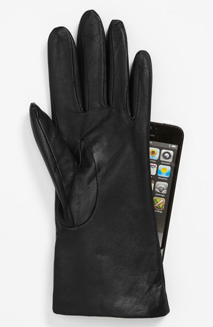
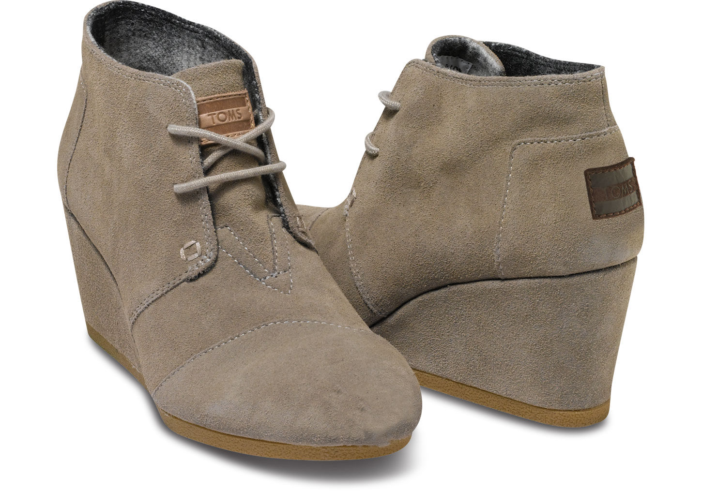

Fownes Brothers Basic Tech Cashmere-Lined Leather Gloves, $65.98
Your Celia lost a glove last winter, so she has only one left to keep her fingers toasty this year. One pair each in black and brown in size 6.5 would be perfect!

TOMS Desert Wedge Booties, $88.95
Size 7.5 in taupe suede—perfect for the charity-minded fashionista who needs to cover a lot of ground in style! Also available direct from TOMS.
Contribution to Student Loan Repayment Fund
Contribution to Project Management Course Fund, $200.00
Contribution to Career Coaching/Professional Development Fund
Gym membership: Healthworks, Boston Sports Club, Bikram Boston
Gift credit for Uber, Lyft, Garment Valet, Lan Nail Salon, Handy, MBTA